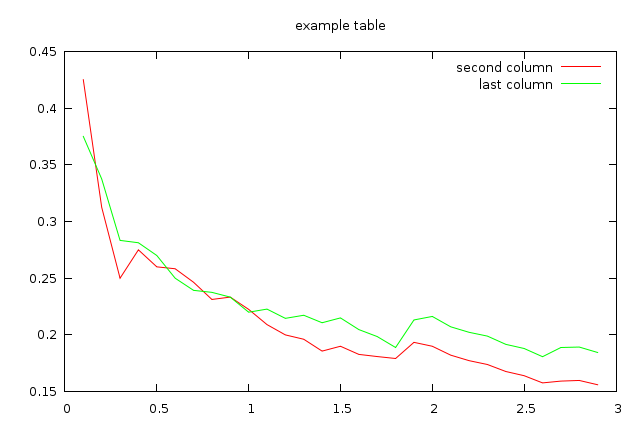
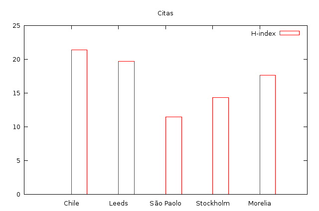
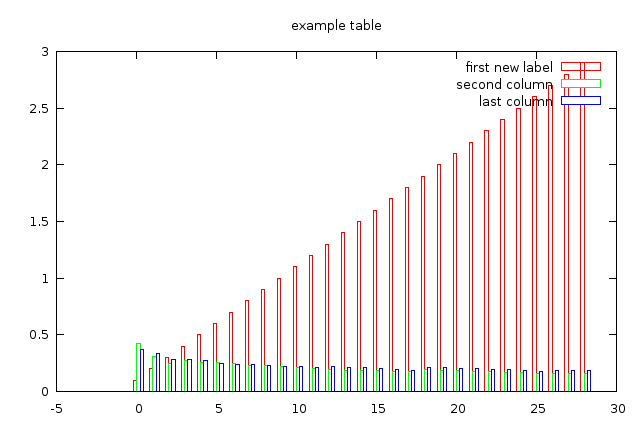
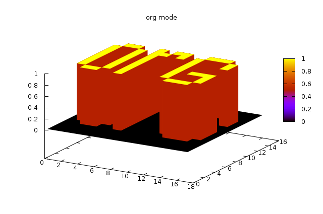
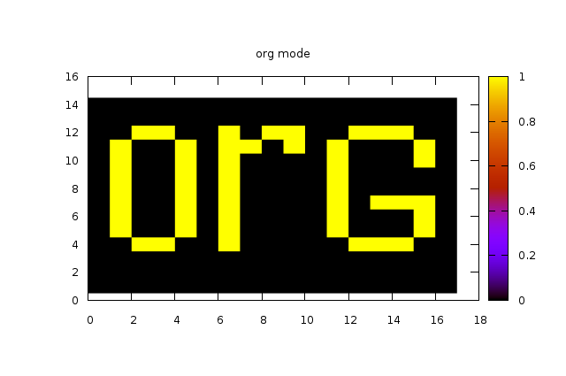
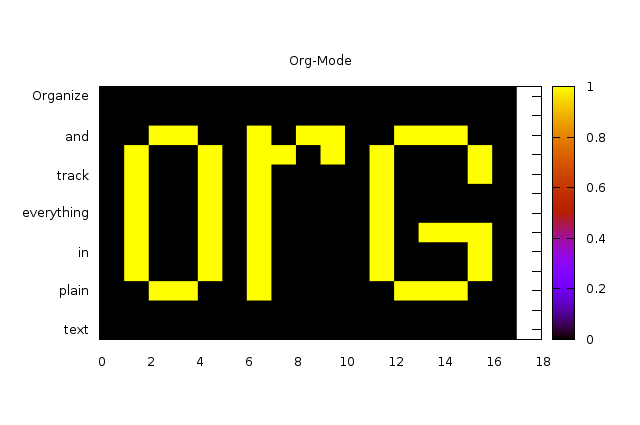
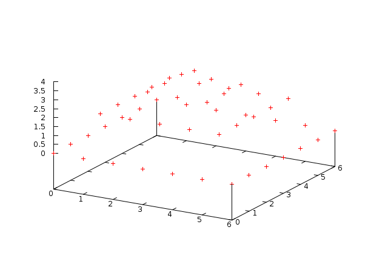
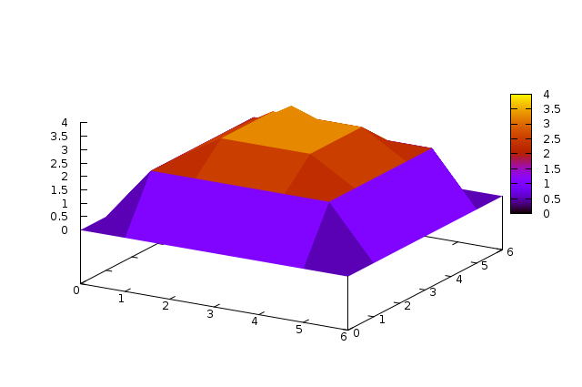

Plotting tables in Org-Mode using org-plot
Table of Contents
Introduction
This tutorial provides instructions for installing and using org-plot as well as a complete overview of the org-plot options and demonstrations of some of the many types of graphs which can be generated automatically from tables in your org-mode files using org-plot.
While graphs will be included in the html version of this tutorial, if you would like to play along at home you can download the original org file here org-plot.org.
Getting Set up
Requirements
Org-plot uses Gnuplot as well as the Emacs Gnuplot-mode to power its graphing. To download and install these two requirements see the following
Installation
First we need to make sure that org-plot is on your system and
available to emacs. If you have a recent version of org-mode (version
6.07 or later) then org-plot is already included. Otherwise you can
grab the latest org-plot.el from github/eschulte/org-plot. Once you
have org-plot loaded it may be useful to bind the main plotting
command org-plot/gnuplot to a key chord, I use C-M-g for the
mnemonic “graph” which can be done by executing the following elisp
snippet. This command will be the only org-plot command needed for
the remainder of this tutorial.
(local-set-key "\M-\C-g" 'org-plot/gnuplot)
Alright, we’re now ready to start generating some graphs.
Examples
2d plots (lines and histograms)
First, to plot the following table use the key sequence defined above
C-M-g. This will call org-plot/gnuplot which finds and plots the
nearest table. The options specified in any #+PLOT lines above the
table are read and applied to the plot. Notice that the second
#+PLOT: line specifies labels for each column, if this line is
removed the labels will default to the column headers in the table,
try removing this line and re-plotting.

For a complete list of all of the options and their meanings see the No description for this link section at the end of this file. For more information on gnuplot options see the gnuplot documentation, nearly all gnuplot options should be accessible through org-plot.
| independent var | first dependent var | second dependent var |
|---|---|---|
| 0.1 | 0.425 | 0.375 |
| 0.2 | 0.3125 | 0.3375 |
| 0.3 | 0.24999993 | 0.28333338 |
| 0.4 | 0.275 | 0.28125 |
| 0.5 | 0.26 | 0.27 |
| 0.6 | 0.25833338 | 0.24999993 |
| 0.7 | 0.24642845 | 0.23928553 |
| 0.8 | 0.23125 | 0.2375 |
| 0.9 | 0.23333323 | 0.2333332 |
| 1 | 0.2225 | 0.22 |
| 1.1 | 0.20909075 | 0.22272708 |
| 1.2 | 0.19999998 | 0.21458333 |
| 1.3 | 0.19615368 | 0.21730748 |
| 1.4 | 0.18571433 | 0.21071435 |
| 1.5 | 0.19000008 | 0.2150001 |
| 1.6 | 0.1828125 | 0.2046875 |
| 1.7 | 0.18088253 | 0.1985296 |
| 1.8 | 0.17916675 | 0.18888898 |
| 1.9 | 0.19342103 | 0.21315783 |
| 2 | 0.19 | 0.21625 |
| 2.1 | 0.18214268 | 0.20714265 |
| 2.2 | 0.17727275 | 0.2022727 |
| 2.3 | 0.1739131 | 0.1989131 |
| 2.4 | 0.16770833 | 0.1916667 |
| 2.5 | 0.164 | 0.188 |
| 2.6 | 0.15769238 | 0.18076923 |
| 2.7 | 0.1592591 | 0.1888887 |
| 2.8 | 0.1598214 | 0.18928565 |
| 2.9 | 0.15603453 | 0.1844828 |
Org-plot can also produce histograms from 2d data, plot the following
table. Notice that the column specified as ind contains textual
non-numeric data, when this is the case org-plot will use the data as
labels for the x-axis using the gnuplot xticlabels() function.

| Sede | Max cites | H-index |
|---|---|---|
| Chile | 257.72 | 21.39 |
| Leeds | 165.77 | 19.68 |
| São Paolo | 71.00 | 11.50 |
| Stockholm | 134.19 | 14.33 |
| Morelia | 257.56 | 17.67 |
For another example of plotting histograms instead of lines, change the following options on the first table on this page, and replot
- remove the
ind:1option - replace the
with:linesoption withwith:histograms

3d grid plots
There are also some functions for plotting 3d or grid data. To see an
example of a grid plot call org-plot/gnuplot C-M-g which will plot
the following table as a grid.

To see the effect of map try setting it to t, and then
re-plotting.

| 0 | 0 | 0 | 0 | 0 | 0 | 0 | 0 | 0 | 0 | 0 | 0 | 0 | 0 | 0 | 0 | 0 |
| 0 | 0 | 0 | 0 | 0 | 0 | 0 | 0 | 0 | 0 | 0 | 0 | 0 | 0 | 0 | 0 | 0 |
| 0 | 0 | 0 | 0 | 0 | 0 | 0 | 0 | 0 | 0 | 0 | 0 | 0 | 0 | 0 | 0 | 0 |
| 0 | 0 | 1 | 1 | 0 | 0 | 1 | 0 | 0 | 0 | 0 | 0 | 1 | 1 | 1 | 0 | 0 |
| 0 | 1 | 0 | 0 | 1 | 0 | 1 | 0 | 0 | 0 | 0 | 1 | 0 | 0 | 0 | 1 | 0 |
| 0 | 1 | 0 | 0 | 1 | 0 | 1 | 0 | 0 | 0 | 0 | 1 | 0 | 0 | 0 | 1 | 0 |
| 0 | 1 | 0 | 0 | 1 | 0 | 1 | 0 | 0 | 0 | 0 | 1 | 0 | 1 | 1 | 1 | 0 |
| 0 | 1 | 0 | 0 | 1 | 0 | 1 | 0 | 0 | 0 | 0 | 1 | 0 | 0 | 0 | 0 | 0 |
| 0 | 1 | 0 | 0 | 1 | 0 | 1 | 0 | 0 | 0 | 0 | 1 | 0 | 0 | 0 | 0 | 0 |
| 0 | 1 | 0 | 0 | 1 | 0 | 1 | 0 | 0 | 0 | 0 | 1 | 0 | 0 | 0 | 1 | 0 |
| 0 | 1 | 0 | 0 | 1 | 0 | 1 | 1 | 0 | 1 | 0 | 1 | 0 | 0 | 0 | 1 | 0 |
| 0 | 0 | 1 | 1 | 0 | 0 | 1 | 0 | 1 | 1 | 0 | 0 | 1 | 1 | 1 | 0 | 0 |
| 0 | 0 | 0 | 0 | 0 | 0 | 0 | 0 | 0 | 0 | 0 | 0 | 0 | 0 | 0 | 0 | 0 |
| 0 | 0 | 0 | 0 | 0 | 0 | 0 | 0 | 0 | 0 | 0 | 0 | 0 | 0 | 0 | 0 | 0 |
Plotting grids also respects the independent variable (ind:) option,
and uses the values of the independent row to label the resulting
graph. The following example borrows a short description of org-mode
from Bernt Hansen on the mailing list (a more practical usage would
label every single row with something informative).

| text | 0 | 0 | 0 | 0 | 0 | 0 | 0 | 0 | 0 | 0 | 0 | 0 | 0 | 0 | 0 | 0 | 0 |
| 0 | 0 | 0 | 0 | 0 | 0 | 0 | 0 | 0 | 0 | 0 | 0 | 0 | 0 | 0 | 0 | 0 | |
| plain | 0 | 0 | 1 | 1 | 0 | 0 | 1 | 0 | 0 | 0 | 0 | 0 | 1 | 1 | 1 | 0 | 0 |
| 0 | 1 | 0 | 0 | 1 | 0 | 1 | 0 | 0 | 0 | 0 | 1 | 0 | 0 | 0 | 1 | 0 | |
| in | 0 | 1 | 0 | 0 | 1 | 0 | 1 | 0 | 0 | 0 | 0 | 1 | 0 | 0 | 0 | 1 | 0 |
| 0 | 1 | 0 | 0 | 1 | 0 | 1 | 0 | 0 | 0 | 0 | 1 | 0 | 1 | 1 | 1 | 0 | |
| everything | 0 | 1 | 0 | 0 | 1 | 0 | 1 | 0 | 0 | 0 | 0 | 1 | 0 | 0 | 0 | 0 | 0 |
| 0 | 1 | 0 | 0 | 1 | 0 | 1 | 0 | 0 | 0 | 0 | 1 | 0 | 0 | 0 | 0 | 0 | |
| track | 0 | 1 | 0 | 0 | 1 | 0 | 1 | 0 | 0 | 0 | 0 | 1 | 0 | 0 | 0 | 1 | 0 |
| 0 | 1 | 0 | 0 | 1 | 0 | 1 | 1 | 0 | 1 | 0 | 1 | 0 | 0 | 0 | 1 | 0 | |
| and | 0 | 0 | 1 | 1 | 0 | 0 | 1 | 0 | 1 | 1 | 0 | 0 | 1 | 1 | 1 | 0 | 0 |
| 0 | 0 | 0 | 0 | 0 | 0 | 0 | 0 | 0 | 0 | 0 | 0 | 0 | 0 | 0 | 0 | 0 | |
| Organize | 0 | 0 | 0 | 0 | 0 | 0 | 0 | 0 | 0 | 0 | 0 | 0 | 0 | 0 | 0 | 0 | 0 |
3d plots
Finally the last type of graphing currently supported is 3d graphs of data in a table. This will probably require some more knowledge of gnuplot to make full use of the many options available.

For some simple demonstrations try the following graph using some
different with: options with:points, with:lines, and
with:pm3d.

| 0 | 0 | 0 | 0 | 0 | 0 | 0 |
| 0 | 2 | 2 | 2 | 2 | 2 | 0 |
| 0 | 2 | 3 | 3 | 3 | 2 | 0 |
| 0 | 2 | 3 | 4 | 3 | 2 | 0 |
| 0 | 2 | 3 | 3 | 3 | 2 | 0 |
| 0 | 2 | 2 | 2 | 2 | 2 | 0 |
| 0 | 0 | 0 | 0 | 0 | 0 | 0 |
Setting Axis Titles
The question of the proper syntax for setting axis labels via org-plot has occurred on the mailing list.1 The answer is to use this:
#+PLOT: set:"xlabel 'Name'" set:"ylabel 'Name'"
Reference
Plotting Options
Gnuplot options (see the gnuplot documentation) accessible through `org-plot’, common gnuplot options are specifically supported, while all other options are accessible through specification of generic set commands, script lines, or specification of custom script files. Possible options are…
- set
- specify any gnuplot option to be set when graphing
- title
- specify the title of the plot
- ind
- specify which column of the table to use as the x axis
- deps
- specify the columns to graph as a lisp style list,
surrounded by parenthesis and separated by spaces for
example
dep:(3 4)to graph the third and fourth columns (defaults to graphing all other columns aside from the ind column). - type
- specify whether the plot will be ’2d’ ’3d or ’grid’
- with
- specify a with option to be inserted for every col being plotted (e.g. lines, points, boxes, impulses, etc…) defaults to ’lines’
- file
- if you want to plot to a file specify the path to the desired output file
- labels
- list of labels to be used for the deps (defaults to column headers if they exist)
- line
- specify an entire line to be inserted in the gnuplot script
- map
- when plotting 3d or grid types, set this to true to graph a flat mapping rather than a 3d slope
- script
- if you want total control you can specify a script file (place the file name inside quotes) which will be used to plot, before plotting every instance of $datafile in the specified script will be replaced with the path to the generated data file. Note even if you set this option you may still want to specify the plot type, as that can impact the content of the data file.
- timefmt
- if there is time and/or date data to be plotted, set the
format. For example,
timefmt:%Y-%m-%dif the data look like2008-03-25.